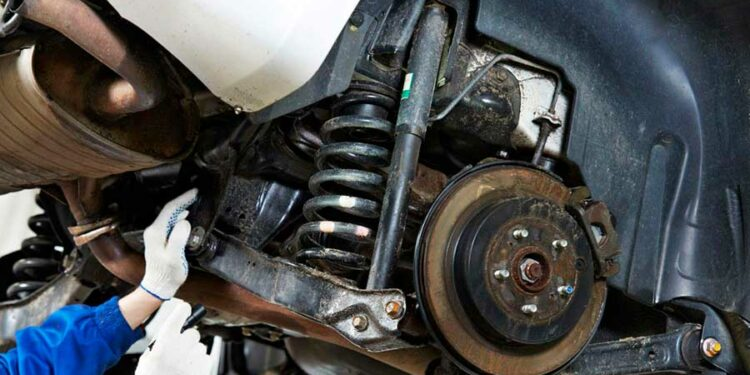

Ремонт рулевого управления по своей сложности нельзя, конечно же, сравнить с ремонтом двигателя или коробки передач автомобиля, но по своей значимости ремонт рулевого управления является одним из важных видов ремонта. Рулевое управление автомобиля на первый взгляд является не сложным механизмом. Раньше может это было и так, но в современных автомобилях рулевое управление автомобиля уже представляет из себя сложную конструкцию, которая благодаря своей сложности позволяет более удобно управлять автомобилем. Во многих моделях автомобилей уже установлены гидроусилители или электро усилители руля. Положение рулевого колеса можно менять нажатием одной кнопки. Само рулевое колесо можно заменить, рулевым колесом другого диаметра буквально за одну секунду (в спортивных вариантах автомобилей). Естественно, что рулевое управление автомобиля не вечно, и чем сложнее его конструкция, тем выход его из строя наиболее вероятен. Хотя все зависит от производителя и качества сборки автомобиля. Однако поломки случаются в любых случаях и тогда ремонт рулевого управления просто необходим. Необходимо знать, что если выходит из строя рулевое управление, его дальнейшая эксплуатация запрещена. Без эвакуатора или буксировки на жесткой сцепки, в данной ситуации Вам не обойтись. Ремонт рулевого управления, рекомендуется проводить на специализированном автосервисе, в данной ситуации шутить с рулевым управлением, аналогично как и с тормозной системой автомобиля нельзя.
